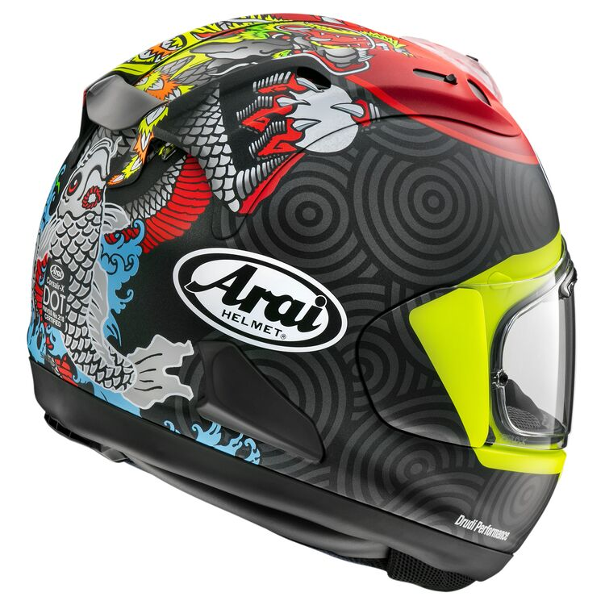
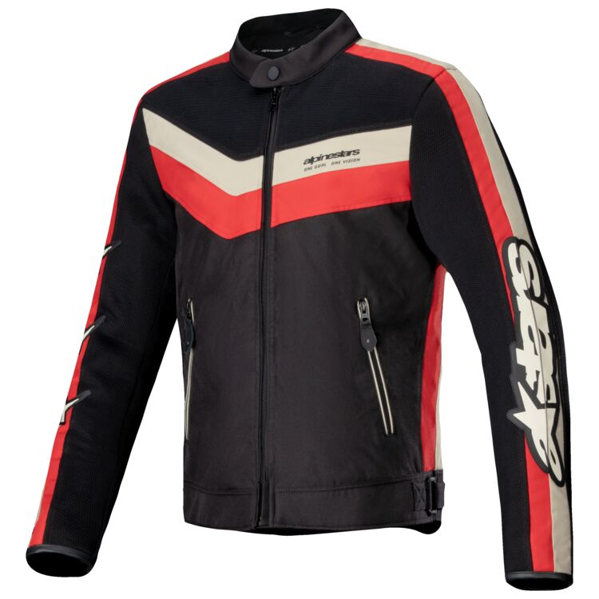
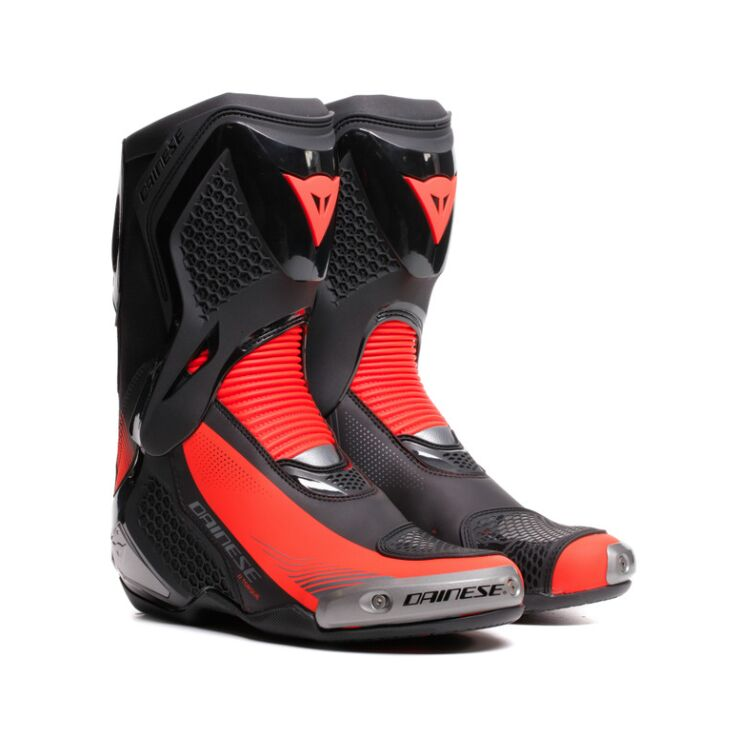

Our Products Here At SwMoMotorcycleShop
Arai Motorcycle Helmets
Arai helmets are known for their superior safety features and comfort. They are designed to provide the best protection for riders while ensuring a comfortable fit. With a variety of styles and designs, Arai helmets are a popular choice among motorcycle enthusiasts.
Alpinestars Motorcycle Jackets
Alpinestars jackets are designed for both style and functionality. They offer excellent protection against the elements while providing a sleek and modern look. Made from high-quality materials, Alpinestars jackets are durable and built to last, making them a great investment for any rider.
Dainese Motorcycle Boots
Dainese motorcycle boots are designed to provide the ultimate protection and comfort for riders. With a focus on safety and performance, Dainese boots feature advanced materials and technologies to ensure a secure fit and excellent grip. Whether you're on the track or the street, Dainese motorcycle boots are a reliable choice for any rider.